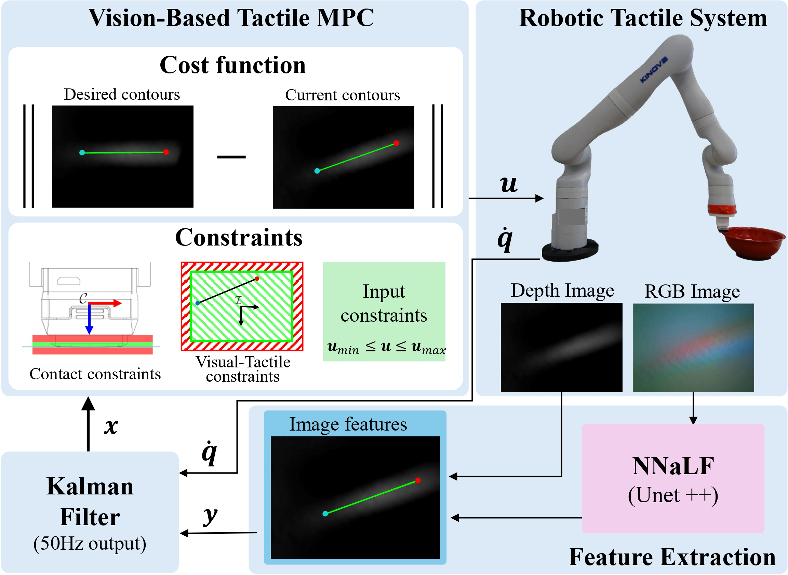

Pipeline of the Proposed VBT-MPC for contour following by touch.
Tactile sensing plays a key role in robotic manipulation, particularly in tasks like surface inspection. Successful execution requires maintaining contact while accurately tracking object contours. In this work, we propose a Vision-Based Tactile Model Predictive Control (VBT-MPC) framework for robotic contour following using a Vision-Based Tactile Sensor (VBTS) mounted in an eye-in-hand configuration. The proposed controller operates directly in contour features space, thereby avoiding the need for separate pose-estimation modules or complex force-control architectures. We further compare our VBT-MPC with visual-servoing strategies adapted to tactile features, and evaluate contour tracking on objects with diverse geometries and materials in both simulation and real-world experiments.
@article{velasco2024visual,
title={VBT-MPC: Vision-Based Tactile MPC for Contour Following},
author={Velasco-S{\'a}nchez, Edison and Recalde, Luis F and Guanrui, Li and Gil, Pablo},
journal={IEEE Robotics and Automation Letters},
year={2026},
publisher={IEEE}
}